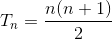
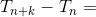
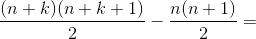
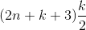
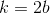
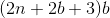
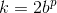
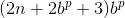
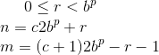
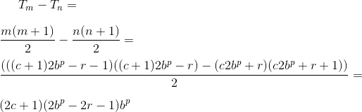

Toying around with triangular numbers with certain digits, I did a search to see if others had found some neat formulas, and came across William James Tychonievich's blog entry that mentioned a pattern in the digits - every 10*2 (for decimal) triangular number ends in the same digit, and this series of 20 ending digits is a palindrome, i.e. ten digits then those same digits in reverse. According to the blog, this held for every base (2*2 for binary, 3*2 for trinary and so on), and also held for higher digits, just one power of the base higher.
The author did not feel he had the mathematics skill to express this algebraically or explore further, so I set to and tried myself. First thing I did was to look up the formula for triangular numbers:  Trying out a few large numbers, incrementing n by, say 200 or 2000, and checking if the corresponding digit remained the same, showed that the pattern appeared to hold. I then tried to figure out the form of the number such an increment corresponds to; using k to mean the increment in the index of triangular numbers, I can use n and n + k in the above formula, and calculate the difference:    and there seems to be the first answer; but cleaning it up makes it clearer, so let's swap variables and say  yielding  that is, if I make a step (of size k) over a number of triangular numbers equal to twice of a base (the b here), then the new triangular number is a multiple of b larger, which would preserve the last digit of the number in that base; similar if I said  with p being the power, i.e. a number position in the base b, the result would be  preserving the last p digits, and so on.
But what about the palindrome property? Can I prove this in a similar simple way? Since I need to mirror around a point that moves, I need to extract the period part, and to mirror I can subtract the remainder. I'll try working it out with two triangular numbers n and m using formulas  here, b is still the base, p is the power, c is a constant selecting which period, and r is where in the period I'm looking - for n an offset forward from the first number in the period, for m working backwards from the next period (minus one to get the last number in this period). The difference between the two then becomes:  and once again, the base to the power of the position turns out to be a factor of the difference, preserving the digits from that position out.